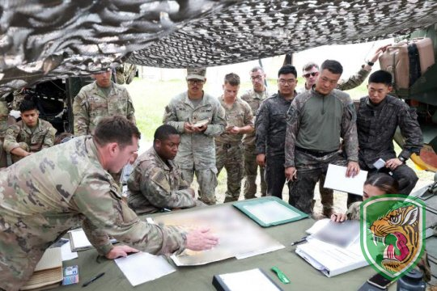

CH.01 — Introduction
전시장에서, 협상 테이블에서, 진료실에서, 공연장에서 — 그리고 실전 훈련 현장에서.
한국어·영어·중국어를 모두 원어민 수준으로 구사하는 트라이링구얼 통역사입니다. 중국 쑤저우에서 학창 시절을 보내며 익힌 중국어는 일상 회화를 넘어 고문(문언문) 독해까지 가능하고, 현재는 싱가포르 SMU에서 금융을 전공하며 비즈니스 현장의 언어를 함께 익히고 있습니다.
Seafood Expo Asia·IDEM·FHA 등 싱가포르 국제 박람회 부스 통역, PLAVE 콘서트 현장의 네트워크·운영 통역, 언론중재위원회의 NTU 전문가 인터뷰 통역, LG CNS의 글로벌 뱅킹 기술 통역, 피부과 클리닉 의료 통역, 한미 연합훈련 통역병 복무까지 — 다양한 환경에서 실시간 통역을 수행해왔습니다.
- Based
- Singapore
- Raised
- Suzhou, China — 2018–22
- Study
- SMU — Finance
- Served
- ROK Army — Interpreter
구사 언어
2026 싱가포르 현장 통역
의료 통역 하루 응대 고객
분대장으로 이끈 분대원
CH.02 — Experience · 08 Tracks
현장이 증명합니다.
-
KO ⇄ EN · 中
2026 PLAVE World Tour Keep It Manic in Singapore
공연 현장 통역 요원 · 네트워크·운영
 Official poster
Official poster
KO ⇄ EN · 中PLAVE LIVE Production APEX @ EXPO · Singapore EXPO
한국 제작진과 현지 프로모터·스태프 사이에서 한국어·영어·중국어로 네트워크 및 운영 통역을 담당했습니다. 3일간 한국 엔지니어와 현지 IT·운영 인력의 기술 협의와 현장 운영 소통을 실시간으로 연결했고, 이슈가 빠르게 오가는 공연 환경에서 양측의 의사를 중립적으로 정확히 전달하는 데 집중했습니다.
-
KO ⇄ EN
Press Arbitration Commission at NTU
연구 인터뷰 통역 (한-영 순차) · 언론중재위원회 해외 조사


KO ⇄ ENExpert interviews ×2 · NTU Wee Kim Wee School of Comm. & Information · NTU
한국 언론중재위원회의 싱가포르 현지 조사에 동행해, NTU 커뮤니케이션 학부 교수진과의 전문가 인터뷰 두 건을 한-영 순차 통역했습니다. 사전에 위원회 영문 자료와 질문지로 조정·중재·정정보도 등 언론 분쟁 용어를 정리했고, 싱가포르의 언론 피해 구제 방식, 플랫폼 확산에 따른 정정보도의 한계, POFMA, 뉴스 제작에 AI가 쓰이며 생기는 쟁점 같은 정책·학술 논의를 정확히 옮겼습니다.
-
KO ⇄ 中
Seafood Expo Asia 2026
전시 통역 요원 (중국어) · 해청정 부스, 한국관

KO ⇄ 中Hae Cheong Jeong · Korea Pavilion Sands Expo & Convention Centre · Singapore
전시대행사 하이퍼스를 통해 한국관 참가사 해청정(해초미인) 부스의 중국어 통역을 전담했습니다. 해초·두부·다시마·검은콩 면 등 즉석 저칼로리 건강면 제품군의 특징(글루텐프리·비건 인증, 4無 무첨가, 상온 보관)을 사전에 숙지한 뒤, 3일간 부스를 찾은 중국어권 바이어를 대상으로 제품 소개와 상담을 통역하고 수출상담 일지를 작성했습니다.
-
KO ⇄ EN · 中
FHA — Food & Hospitality Asia 2026
전시 통역 요원 · 신평양조장

KO ⇄ EN · 中Sinpyeong Brewery Singapore EXPO
전통주 브랜드의 해외 진출을 지원하는 통역으로 참여, 제품 소개부터 현지 디스트리뷰터와의 실질적인 비즈니스 미팅까지 영어와 중국어로 통역했습니다. 단순 언어 전달을 넘어 중국계 바이어와의 상담에서 신뢰를 쌓는 데 집중했으며, 상담 일지 작성을 보조해 담당자가 미팅 후에도 협상 맥락을 정확히 파악할 수 있도록 했습니다.
-
KO ⇄ EN · 中
IDEM Singapore 2026
전시 통역 요원 · innoDtech

KO ⇄ EN · 中innoDtech · Dr.AlignNavi Marina Bay Sands · Singapore
한국 치과 AI 스타트업의 부스 통역을 담당하며, 3일간 부스를 방문한 국내외 바이어와 참관객을 대상으로 한국어-영어 통역을 수행했습니다. 특히 부스를 찾은 중국계 클라이언트 및 협력사와의 상담에서는 중국어로 직접 응대하며 언어 장벽 없는 커뮤니케이션을 이끌었습니다. 사전에 치과의료기기 관련 전문 용어를 숙지해 제품 설명의 정확도를 높였고, 상담 내용을 빠짐없이 기록해 사후 팔로우업이 가능하도록 지원했습니다.
-
KO ⇄ EN
LG CNS Singapore
Client Engagement Intern · 비즈니스·기술 통역
 Client-Confidential
Client-Confidential
KO ⇄ ENGlobal banking · APAC Client-confidential project · APAC
APAC 지역 글로벌 뱅킹 클라이언트를 대상으로 한 IT 및 클라우드 아키텍처 프로젝트에서 통역을 담당했습니다. 기술 미팅 특성상 도메인 지식과 정확한 용어 이해가 필수적인 환경에서, 복잡한 기술 논의를 실시간으로 정확하게 전달하는 역량을 쌓았습니다. 박람회 통역과는 결이 다른, 고난도 비즈니스·기술 통역 경험입니다.
-
KO ⇄ 中
IH Clinic Seoul
한-중 의료 통역 · 원장 및 의료진 직접 통역

KO ⇄ 中Dermatology · ~30 clients / day Dermatology clinic · Seoul
피부과 전문 클리닉에서 원장 및 의료진과 중국어권 고객 사이의 실시간 한-중 의료 통역을 담당했습니다. 보톡스·필러·스킨부스터 등 주사 시술, 울쎄라·텐쎄라·써마지 등 리프팅·레이저 기기 시술, 영양주사와 미백주사 등 수액 시술 전 과정에서 상담부터 시술 중 안내, 사후 주의사항까지 통역하며 하루 약 30명의 고객을 응대했습니다. 시술 부위, 용량, 부작용처럼 오역이 곧 안전 문제로 이어지는 의료 용어를 정확히 전달하는 데 집중했습니다.
-
KO ⇄ EN
대한민국 육군
K1A2 전차 포수 · 통역병 · 분대장

KO ⇄ ENROK–US Combined Exercise Capital Mechanized Infantry Division · ROK
한미 연합작전 통역 · 1년 7개월
복무 기간 전반에 걸쳐 한미 연합훈련 시 미군 측과의 작전 브리핑·현장 커뮤니케이션 통역을 수행하며, 압박감 높은 실전 환경에서 오역이 허용되지 않는 통역 역량을 길렀습니다. 동시에 15명 규모 분대를 이끄는 분대장으로서 팀을 관리했고, 만기 전역으로 복무를 마쳤습니다. 통역 실무와 리더십을 동시에 증명하는 이력입니다.
CH.03 — Languages & Credentials
세 개의 언어, 하나의 목소리.
IN 01 — Native
한국어
모국어
IN 02 — Native
English
국제학교 · IB 디플로마
IN 03 — Native+
中文
고문(문언문) 독해 가능 · HSK 6급
言必信，行必果。《論語 · 子路》
Chinese Proficiency Test (HSK) Level 6
Confucius Institute Headquarters · 2021.12
International Baccalaureate Diploma Programme
International Baccalaureate · 2022.05
CH.04 — Background
배움, 그리고 그 너머.
Singapore Management University
Business — Finance & International Trade 세부 전공
Suzhou Singapore International School
중국 쑤저우 소재 — 트라이링구얼 역량의 기반이 된 학창 시절
The Shilla Hotels & Resorts
화장품 영업 인턴 — 중국어·영어 역량으로 해외 고객 응대 및 매출 기여
CH.05 — Services
이런 통역이 가능합니다.
- 01
부스 방문객 응대
한·영·중 3개 언어로 참관객 응대 및 제품 설명
- 02
바이어 미팅 통역
디스트리뷰터·투자자 대상 비즈니스 미팅 순차 통역
- 03
수출상담 일지 작성
상담 내용 기록 및 사후 팔로우업 지원 — Seafood Expo·IDEM·FHA 현장 실무 경험
- 04
사전 제품 교육 숙지
의료기기·F&B·IT 등 도메인별 전문 용어 사전 학습
- 05
의료 통역
상담·시술·사후 관리까지 한-중 의료 통역 — IH Clinic 실무 경험
- 06
비즈니스·기술 통역
IT·클라우드·금융 등 전문 분야 미팅 통역 — LG CNS 실무 경험
- 07
공연·대형 행사 운영 통역
제작진과 현지 스태프 간 네트워크·운영 소통 통역 — PLAVE 콘서트 실무 경험
- 08
학술·정책 인터뷰 통역
교수·연구진 대상 전문가 인터뷰 한-영 순차 통역 — 언론중재위원회 NTU 인터뷰 실무 경험
CH.06 — Contact · Talkback
함께 일해요.
박람회·행사 통역 문의는 아래 연락처로 편하게 남겨주세요. 싱가포르 현지에서 바로 투입 가능하며, 빠르게 회신드리겠습니다.
hongjinhyotopAvailable싱가포르 거주 · 현지 출퇴근 가능 · SECC / MBS / Singapore EXPO 전 지역